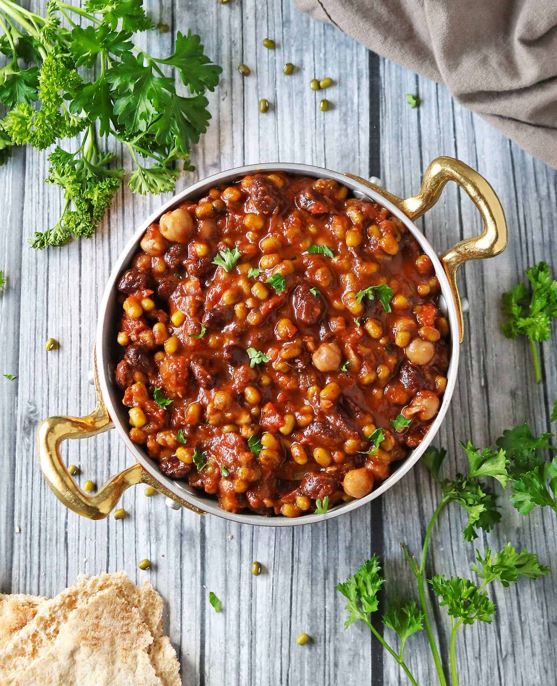

Stewed Beans

This dish may not look the best, but i can assure you its hella tasty.
Ingredients
- 32 ounces black eyed peas or Nigerian brown beans if you can find them.
- water
- 2 pounds smoked turkey
- 4 roma tomatoes
- 1 bell pepper
- ½ onion
- 1 scotch bonnet pepper
- 3 Maggi cubes
- 2 teaspoons ground crayfish
- ¼ cup palm oil
- sea salt to taste
Cooking Instructions
- Rinse beans and add to a large pot. Add enough water to cover the beans by one inch then add turkey to the pot.
- Cover pot and cook over medium heat until beans have softened and most of the water has cooked off (about 45 minutes).
- While beans cook, cut tomatoes, bell pepper, and onion into chunks. Add to blender with habanero pepper and one cup of water to assist blending process. Pulse ingredients in blender until a liquified, uniform mixture forms. Crush Maggi cubes into a powder.
- Remove turkey from cooked beans and add in tomato mixture, crayfish, maggi cubes, and palm oil. Stir until incorporated.
- Remove turkey meat and skin from bones and shred into bite sized pieces. It's helpful to use two forks for this.
- Stir meat back into pot and continue cooking beans for another 30 minutes to one hour to achieve desired thickness and texture. Taste test and add salt, as needed.